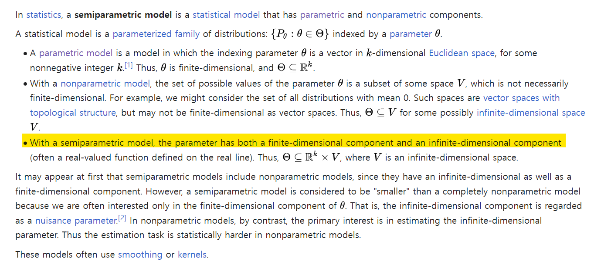
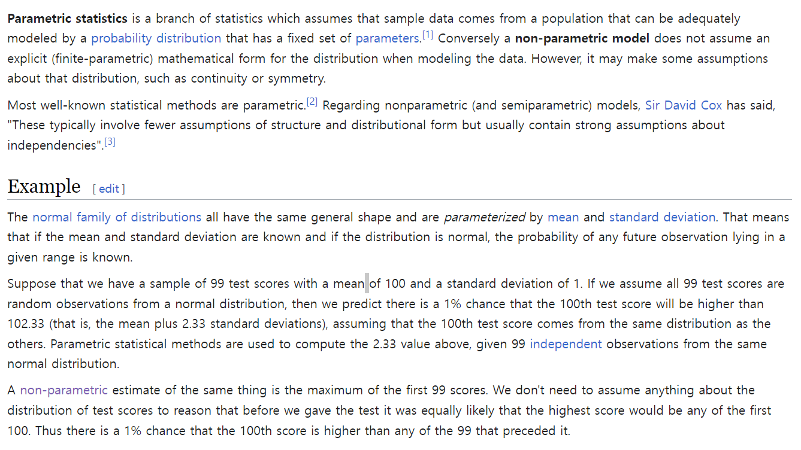

2.1 선형모델
비선형 입출력 함수도 표현할 수 있도록 확장한 것이 파라미터에 대한 선형 모델이다.
\[f_{\theta}(x) = \sum_{j=1}^b \theta_j \phi_j (x) = \theta^\top \phi(x)\]
이때, \(\phi_j(x)\)는 기저 함수(basis function) 벡터 \(\phi(x) = (\phi_1(x), \dots, \phi_b(x))^\top\)의 \(j\)번째 요소, \(\theta_j\)는 파라미터 벡터 \(\theta = (\theta_1, \dots, \theta_b)^\top\)의 \(j\)번째 요소를 나타낸다. 또, \(b\)는 기저 함수의 수를, \(\top\)는 전치행렬을 나타낸다.이 모델은 파라미터 벡터 \(\theta\)에 대해서는 여전히 선형이지만, 예를들어 기저 함수로써 다음의 다항식이나,
\[\phi(x) = (1,x,x^2,\dots,x^{b-1})^\top\]
\(b=2m+1\)에 대한 다음의 삼각 다항식 등을 선택하면 복잡한 비선형 함수도 나타낼 수 있게 된다.
\[\phi(x) = (1, \sin x, \cos x, \sin 2x, \cos 2x, \dots, \sin ms, \cos mx)^\top\]
이 모델은 \(d\)차원의 입력벡터 \({\bf x} = (x^{(1)}, \dots, x^{(d)})^\top\)로도 자연스럽게 확장할 수 있다.
\[f_{\theta}(x) = \sum_{j=1}^b \theta_j \phi_j (x) = \theta^\top \phi(x)\]
다차원 입력 벡터 \(\bf x\)에 대하여 어떤 기저 함수를 택해야 할까?
승법모델 (multiplicative models)
1차원 기저 함수의 곱으로 다차원 기저 함수를 구성한다.
\[f_{\theta}(x)=\sum_{j_1=1}^{b'}\cdots \sum_{j_d=1}^{b'} \theta_{j1,\dots, jd}\phi_{j1}(x^{(1)})\cdots \phi_{jd}(x^{d})\]
- \(b'\) : 각 차원의 파라미터 수
- 승법모델에서는 모든 1차원 기저함수의 조합을 따지므로 복잡한 함수를 표현할 수 있다.
- 그러나 전체 파라미터 수가 \((b')^d\)가 되므로 입력차원 \(d\)에 대하여 지수적으로 증가한다.
이렇게 차원에 대해 파라미터 수가 지수적으로 증가하는 현상을 차원의 저주 라 부른다.
가법모델(additive models)
1차원 기저 함수의 합으로 다차원 기저 함수를 구성한다.
\[f_{\theta}(x) = \sum_{k=1}^d\sum_{j=1}^{b'} \theta_{k,j} \phi_j (x^{(k)}) \tag{2.1}\]
가법모델에서는 전체 파라미터 수가 \(b'd\)개가 되므로 입력 차원 \(d\)에 대하여 선형으로만 증가한다. 예를들면, \(b'=10\)이고, 입력차원 \(d=100\)일 때 전체 하라미터 수는 \(10\times 100 = 1000\)이 되어 컴퓨터로 쉽게 다룰 수 있는 범위를 유지한다.그러나 가법 모델에서는 1차원 기저 함수의 합밖에 표현할 수 밖에 없기 때문에 승법모델만큼의 표현력은 가지지 못한다.
2.2 커널모델
선형모델에서는 다항식이나 삼각다항식 등 기저 함수를 훈련 표본 \(\{(x_i, y_i)\}_{i=1}^n\)과 관계없이 결정해 왔다.
기저함수의 설계에 입력 표본 \(\{x_i\}_{i=1}^n\)을 이용하는 커널 모델(kernel models) 을 소개한다.
커널모델은 이항 함수 \(K( , )\)로 나타낼 수 있는 커널함수를 써서 \(\{K(x,x_j)\}_{j=1}^n\)의 선형결합으로 정의된다.
\[f_{\theta}(x) = \sum_{j=1}^n \theta_j K(x,x_j) \tag{2.2}\]
커널함수로는 가우스 커널(Gaussian kernel) 이 자주 쓰인다.
\[K(x,c) = \exp \left(-\frac{||x-c||^2}{2h^2}\right)\]
- \(||\cdot||\) : \(l_2\) 노름(norm) // ex. \(||x|| = \sqrt{x^\top x}\)
- \(h\): 가우스 커널의 밴드 폭
- \(c\): 가우스 커널의 밴드 중심
가우스 커널 모델은 각 입력 표본 \(\{x_i\}_{i=1}^n\)에 가우스 커널을 배치하고, 각각의 높이 \(\{\theta_i\}_{i=1}^n\)을 파라미터로써 학습한다. 따라서 가우스 커널 모델은 훈련 입력 표본이 있는 위치의 근처에서만 함수를 근사한다. 승법 모델로는 입력공간 전체에서 함수를 근사하는 데 비해, 가우스 커널 모델로는 입력 표본 \(\{x_i\}_{i=1}^n\) 가까이에서만 함수를 근사하므로 차원의 저주로부터 영향을 줄일 수 있다.
각 입력 표본 \(\{x_i\}_{i=1}^n\)에 가우스 커널을 배치하고, 그 높이를 파라미터 \(\{\theta_i\}_{i=1}^n\)으로써 학습하는 것.
입력 표본 근처에서만 함수를 근사하면 되니까, 차원의 저주로부터 오는 어려움이 줄어드는 것이다.
실제로, 커널 모델의 파라미터 수는 입력 변수 \(x\)의 차원 \(d\)에 의존하지 않으며, 훈련 표본 수 \(n\)만으로 결정된다. 따라서 입력차원 \(d\)가 큰 경우에도 표본 수 \(n\)이 그렇게 많지 않으면 컴퓨터로 어렵지 않게 다룰 수 있다.
매우 많은 훈련 표본을 다루는 경우에도 입력 표본 \(\{x_i\}_{i=1}^n\)의 (이를테면 무작위로 선택한) 부분집합 \(\{c_j\}_{j=1}^b\)만을 커널 중심으로 사용하여 계산 부하를 줄일 수 있다.
\[f_{\theta}(x) = \sum_{j=1}^b \theta_j K(x,c_j)\]
커널 모델은 파라미터 벡터 \({\bf\theta}=(\theta_1, \dots, \theta_n)^\top\) 에 대해 선형인 성질 때문에 식 (2.1)의 파라미터에 대한 선형모델의 한 종류로 볼 수 있다.
그러나 기저 함수가 입력 표본에 의존적이기 때문에 커널 모델의 거동은 파라미터에 대한 선형모델과는 크게 달라진다. 이 때문에 통계학에서는 파라미터에 대한 선형 모델을 파라메트릭 모델(parametric models), 커널 모델을 넌파라메트릭 모델(non-parametric models) 로 구분하고 있다.
커널 모델의 또 다른 특징은 입력 \(\bf x\)가 벡터가 아닌 경우에도 비교적 쉽게 확장이 가능하다는 점이다.
커널모델 식 (2.2)의 경우, 입력 \(x\)는 커널 함수 \(K(x,x')\)에서 \(x\)와 \(x'\) 사이에만 존재하므로 두 개의 입력 \(x\)와 \(x'\)에 대한 커널 함수만 정의되어 있다면, 입력 \(\bf x\)는 어떤 값을 취해도 상관없다. 예를 들면, 입력 \(\bf x\)가 문자열, 트리, 그래프 등인 경우에대한 커널 함수가 제안된 바가 있다.
이렇듯 커널함수를 사용한 머신러닝 알고리즘은 커널법 이라 불리며 활발히 연구되고 있다.
semi-parametric

nonparametric
- ref: https://en.wikipedia.org/wiki/Nonparametric_statistics
- ref: https://en.wikipedia.org/wiki/Nonparametric_regression

parametric
